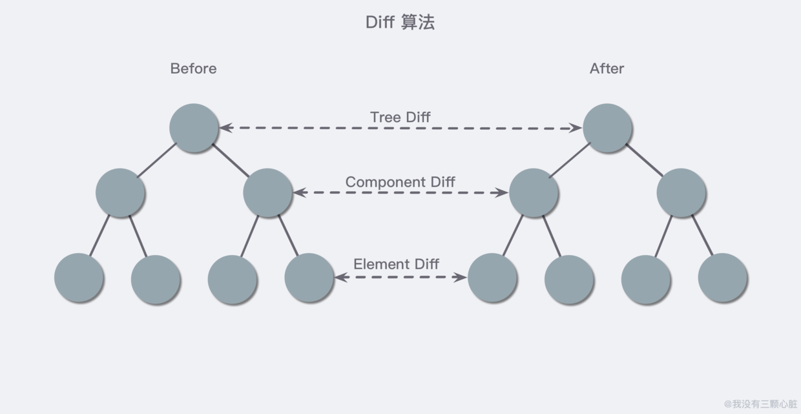

为了获得更好的阅读体验，请访问原地址：传送门
React 是一个起源于 Facebook 的内部项目，因为当时 Facebook 对于市场上所有的 JavaScript MVC 框架都不太满意，所以索性就自己写了一套，用来架设 Instagram。做出来之后，发现这套东西还蛮好用的，于是就在 2013 年 5 月开源了。
在这里我们需要稍微注意一下 库(Library) 和 框架(Framework) 的区别，React 本身是一个用于构建用户界面的 JavaScript 库，而我们平时所说的 React 框架其实是指的是 React/ React-router 和 React-redux 的结合体，库和框架的本质区别体现在于控制权：
这是一个非常有趣的问题，也让我困惑和苦恼。在笔者还在学校的时候尝试用 Vue 搭建了一套简单的博客系统，学习曲线平滑，让只会一些基础 HTML/ CSS 代码的我通过一段时间学习就能够上手了，但是学习 React 以来，进展变得相对缓慢.. 一部分原因是因为 React 创新性的开发模式以及让我感到无所适从的 JSX 语法（菜才是原罪）。
Vue 作者尤雨溪在知乎上回答「Vue 和 React 的优点分别是什么？」这个问题的时候提到 ：
这里我可以大方地承认，如果多年以后要论历史地位，React 肯定是高于 Vue 的。事实上，我作为一个开发者，也是由衷地佩服 Jordan Walke, Sebastian Markbage 这样的，能从开发模式层面上提出突破性的新方向的人。
React 从一开始的定位就是提出 UI 开发的新思路。当年 Pete Hunt 最开始推广 React 的时候的一句口号就叫 "Rethinking Best Practices"，这样的定位使得 React 打开了一些全新的思路，吸引了一群喜欢折腾的早期核心用户，并在这个基础上通过社区迭代孵化出了许多今天被 React 开发者当作常识的 pattern。这是 React 伟大的地方，Vue 里面也有很多地方是直接受到了 React 的启发。React 敢做这样的尝试，是因为它是 Facebook。这样的体量的公司，在 infrastructure 层面获得质的提升，收益是巨大的，而且 Facebook 的工程师们足够聪明又要靠工资吃饭，改变他/她们的习惯并不是什么问题。而对外推广，则是一种大公司才有的 “改变业界” 的底气。
相比「为什么使用 React？」的理由，称赞 React 的倒是明显更多一些（React 确实是突破性的开发模式）。
是因为 React 组件化的思想吗？不是。我觉得这跟多少跟微服务化之类的概念有点儿类似，这是属于一个时代对于计算机工程的思想进步，是对于团队协作提出的新一种成熟的解决方案，也是必然的一种趋势。当前流行的不管是 Angular/ Vue 还是 React，都天然的支持着组件化的概念。
那是因为 React 性能出众吗？我想也不是。或许 React 刚出世时因为其独特高效的虚拟 DOM 设计，能够在前端江湖中平步青云，但是现在前端技术都主键地趋于成熟（我也不懂，我乱说的..），从很多地方的对比数据中，都能够看得到其实 React 与其他框架的性能差异并不是特别大。并且体现在平时的开发中，这样对比不明显的速度差异，根本没有多大的用处。
还看到一种观点，说 React 适用于构建大型的项目。从我并不多的了解中，我知道 React 体系中天然有着许多的约束，以及一些不成文的约定，这就好像是 SpringBoot 中默认提供给使用者的一些姿势，天然就有很强的工程性，加上一些约定俗成的代码风格 or 归约，这就使得 Java 很适合一些大型的团队项目。但能不能开发大型的项目从来都是取决于人，而不是采用了哪种框架。
所以比较令我信服的理由是（我乱猜的）：像 Java 一样，React 体系足够成熟，社区也非常活跃，你遇到的问题很容易在网络上找到答案，并且也有一些成熟的实践 or 轮子用以解决各种各样的问题。而且 React 还有一个比较特别的特性是：你能够比较无痛地使用 React Native 开发原生移动应用。
要理解这个「虚拟 DOM」的概念，首先我们就需要知道什么是「DOM」。我们先暂时忘掉什么网页之类的，我们想象现在我们需要编写程序来对下列的 Markdown 文档进行改变应该怎么做：
# Title
## subtitle - 1
content - 1
## subtitle - 2
content - 2比如我现在就想要 content - 2 的内容进行改变，那么我就需要一行一行的不断遍历直到最后遍历到它才能进行操作，对内容改变的操作都差不多，所以如果我想对这个查找的操作进行优化，最简单的想法就是把它树化以减少高度，增加效率。
DOM 是英文 Document Object Model 的缩写，即文档对象模型。它是一种跨平台的、独立于编程语言的 API，它把 HTML、XHTML 或 XML 文档都当做一个树结构，而每个节点视为一个对象，这些对象可以被编程语言操作，进而改变文档的结构，映射到文档的显示。DOM 最开始的时候是和 JavaScript 交织在一起的，只是后来它们最终演变成了两个独立的实体。DOM 被设计成与特定编程语言相独立，尽管绝大部分时候我们都是使用 JavaScript 来操作，但其实其他的语言一样可以（如 Python）。
假如有这么一段 HTML 代码：
<html>
<head>
<title>文档标题</title>
</head>
<body>
<a href="">链接</a>
<h1>标题</h1>
</body>
</html>那么它最终就应该会是下面这棵树一样的结构：
这里不对 DOM 节点的类型啊方法之类的进行讨论，我们只需要对 DOM 有一个大致的概念就好了。
我们可以简单了解一下浏览器渲染 DOM 的流程：
其实严格来说，单纯的操作 DOM 并不慢，说它慢是带有一定条件的。
想象在一次事件循环中多次操作 DOM 时，有时希望 JS 代码中能立刻获取最新的 DOM 节点信息，这时浏览器不得不挂起 JS 引擎，转而调用 DOM 引擎，计算渲染出最新的 DOM，以此来获取最新的 DOM 节点信息，接着再重新激活 JS 引擎 继续后续的操作。
可以预见，上述操作不仅需要多次进行引擎的切换，还需要多次计算布局，重新绘制 DOM。事实上paint是一个耗时的过程，然而layout是一个更耗时的过程，我们无法确定layout一定是自上而下或是自下而上进行的，甚至一次layout会牵涉到整个文档布局的重新计算。
但是layout是肯定无法避免的，所以我们主要是要最小化layout的次数。
所以，降低引擎切换频率、减小 DOM 变更规模才是 DOM 性能优化方案的关键！
虚拟 DOM 正是解决了上述问题，它的本质就是用 JS 对象来模拟出我们真实的 DOM 树，它的算法大致如下：
我们由此可以对比出两者的不同：
使用虚拟DOM的损耗计算：
总损耗 = 虚拟DOM增删改 + （与Diff算法效率有关）真实DOM差异增删改 + （较少的节点）排版与重绘
直接使用真实DOM的损耗计算：
总损耗 = 真实DOM完全增删改 + （可能较多的节点）排版与重绘
虚拟 DOM 的核心在于 Diff，它自动帮你计算那些应该调整的，然后只修改应该被调整的区域，省下的不是运行速度这种 "小速度"，而是开发速度/ 维护速度/ 逻辑简练程度等 "总体速度"。
但虚拟 DOM 快也是在相对条件下的，这里引用 @尤雨溪大大在知乎问题《网上都说操作真实 DOM 慢，但测试结果却比 React 更快，为什么？》上回答的一句话吧：
不要天真地以为 Virtual DOM 就是快，diff 不是免费的，batching 么 MVVM 也能做，而且最终 patch 的时候还不是要用原生 API。在我看来 Virtual DOM 真正的价值从来都不是性能，而是它 1) 为函数式的 UI 编程方式打开了大门；2) 可以渲染到 DOM 以外的 backend，比如 ReactNative。

Diff 大致可以分为三种类型：
使用 React 的网页源码，结构大致如下（可以直接运行）：
<!DOCTYPE html>
<html>
<head>
<meta charset="UTF-8"/>
<title>Hello React!</title>
<script src="https://cdn.staticfile.org/react/16.4.0/umd/react.development.js"></script>
<script src="https://cdn.staticfile.org/react-dom/16.4.0/umd/react-dom.development.js"></script>
<script src="https://cdn.staticfile.org/babel-standalone/6.26.0/babel.min.js"></script>
</head>
<body>
<div id="example"></div>
<script type="text/babel">
ReactDOM.render(
<h1>Hello, world!</h1>,
document.getElementById('example')
);
</script>
</body>
</html>上面代码有两个地方需要注意。首先，最后一个 <script> 标签的 type 属性为 text/babel 。这是因为 React 独有的 JSX 语法，跟 JavaScript 不兼容。凡是使用 JSX 的地方，都要加上 type="text/babel" 。
其次，上面代码一共用了三个库： react.js 、react-dom.js 和 Browser.js ，它们必须首先加载。其中，react.js是 React 的核心库，react-dom.js 是提供与 DOM 相关的功能，Browser.js 的作用是将 JSX 语法转为 JavaScript 语法，这一步很消耗时间，实际上线的时候，应该将它放到服务器完成。
$ babel src --out-dir build上面命令可以将 src 子目录的 js 文件进行语法转换，转码后的文件全部放在 build 子目录。
ReactDOM.render 是 React 的最基本方法，用于将模板转为 HTML 语言，并插入指定的 DOM 节点。
ReactDOM.render(
<h1>Hello, world!</h1>,
document.getElementById('example')
);上面代码将一个 h1 标题，插入 example 节点，运行结果如下：
上一节的代码， HTML 语言直接写在 JavaScript 语言之中，不加任何引号，这就是 JSX 的语法，它允许 HTML 与 JavaScript 的混写。我们先来看以下一段代码：
const element = <h1>Hello, world!</h1>;与浏览器的 DOM 元素不同，React 当中的元素事实上是普通的对象，React DOM 可以确保 浏览器 DOM 的数据内容与 React 元素保持一致。要将 React 元素渲染到根 DOM 节点中，我们通过把它们都传递给 ReactDOM.render() 的方法来将其渲染到页面上：
var myDivElement = <div className="foo" />;
ReactDOM.render(myDivElement, document.getElementById('example'));JSX 看起来类似 HTML ，你也可以在上面代码中嵌套多个 HTML 标签，但是需要使用一个 div 元素包裹它。
我们可以在 JSX 中使用 JavaScript 表达式。表达式写在花括号 {} 中。实例如下：
ReactDOM.render(
<div>
<h1>{1+1}</h1>
</div>
,
document.getElementById('example')
);在 JSX 中不能使用 if else 语句，但可以使用 conditional (三元运算) 表达式来替代。以下实例中如果变量 i 等于 1 浏览器将输出 true, 如果修改 i 的值，则会输出 false.
ReactDOM.render(
<div>
<h1>{i == 1 ? 'True!' : 'False'}</h1>
</div>
,
document.getElementById('example')
);React 推荐使用内联样式。我们可以使用 camelCase 语法来设置内联样式. React 会在指定元素数字后自动添加 px 。以下实例演示了为 h1 元素添加 myStyle 内联样式：
var myStyle = {
fontSize: 100,
color: '#FF0000'
};
ReactDOM.render(
<h1 style = {myStyle}>菜鸟教程</h1>,
document.getElementById('example')
);注释需要写在花括号中，实例如下：
ReactDOM.render(
<div>
<h1>菜鸟教程</h1>
{/*注释...*/}
</div>,
document.getElementById('example')
);JSX 允许在模板中插入数组，数组会自动展开所有成员：
var arr = [
<h1>菜鸟教程</h1>,
<h2>学的不仅是技术，更是梦想！</h2>,
];
ReactDOM.render(
<div>{arr}</div>,
document.getElementById('example')
);按照惯例黏一个尾巴：
欢迎转载，转载请注明出处！
独立域名博客：wmyskxz.com
简书ID：@我没有三颗心脏
github：wmyskxz
欢迎关注公众微信号：wmyskxz
分享自己的学习 & 学习资料 & 生活
想要交流的朋友也可以加qq群：3382693
钱